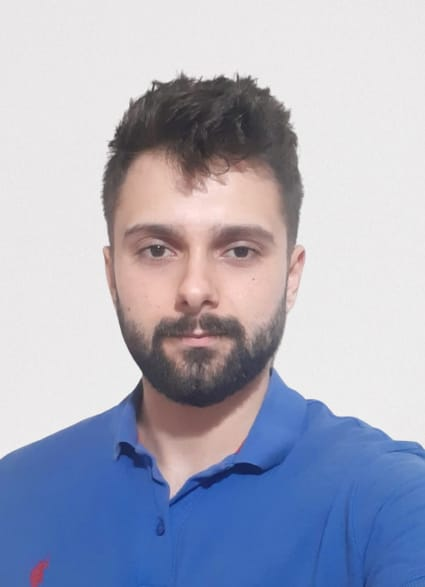

Fırat Kaya

Summary
I always enjoy working and learning new things to achieve my targets.
In my life, I am generally planned and I've good communication and efficient working skills.
I have no trip obstacle for business. I'm compatible with teamwork.
Education
- Sakarya University of Applied Sciences - (Master Degree) - Department of Electrical and Electronics - [ 09.2021 - ... ]
- Sakarya University - Electrical and Electronics Engineer - (Bechelor Degree) - [ 09.2017 - 06.2012 ]
GPA: 2.81 / 4
Work Experience
-
Application & Entegration Specialist- AKCEZ/SEDAŞ
Sept. 2022 - ...
-
To develop business process with eBA by using .NET.
-
To develop business intelligence processes by using POWER BI / DAX
Tools : Power BI - C# .NET- SQL - eBA Bimser
-
Process Performance Analysis Specialist - AKCEZ/SEDAŞ
Dec 2021 - Septe. 2022
-
Making data analysis process about technical and operational activity.
-
Setting KPI for Performance measurement.
-
Making RCA for output of performance analysis and presenting the necessary improvement suggestions.
-
Making business intelligence processes by using POWER BI / DAX
Tools : Power BI - SAP - SQL - Excel/Macros (VBA)
-
Intern Engineer - Biomec Electronics Ltd.
Jan 2021 - Jun. 2021
-
To develop software of emdedded projects.
-
Designing the structure of circuits for embedded projects
-
To apply test procedure to completed projects.
Tools : Embedded C - STM32 Microprocessors - CubeMX
-
Intern Test Engineer - Federal Electric Group Company
July 2020 - Aug 2020
-
To apply the test procedure to the products.
Tools : Embedded C - STM32 Microprocessors - CubeMX
My Skills
-
POWER BI / DAX : ⭐ ⭐ ⭐ ⭐
-
C# : ⭐ ⭐ ⭐
-
MS Excel/Macro : ⭐⭐⭐⭐
-
SQL : ⭐⭐⭐
-
C : ⭐⭐⭐⭐
-
HTML : ⭐⭐⭐
Languages
- Turkish (Native)
-
English
- Reading : B2
- Writing : B2
- Speaking : B1
My Projects
- Developing Performance Report Screen for Operational Activities (SEDAŞ)
- VFD 3 Phase Driver Project - Volunteer Intern Engineer ( Biomec Electronics Ltd. )
- Deep Learning Based Object Recognition Project - (Graduation Project)
- Voice Encryption and Decryption for Security Applications. - (School Project)
Referances
Others